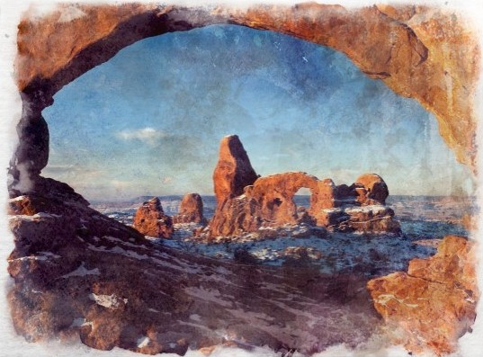

Sandstone
Formed by compressed sediment, like sand it can be any colour, but sandstone deposits often form cliffs and ridges. Relatively soft and easy to carve, it is a widely used building material and artisan choice. It also makes one of the best aquifers.